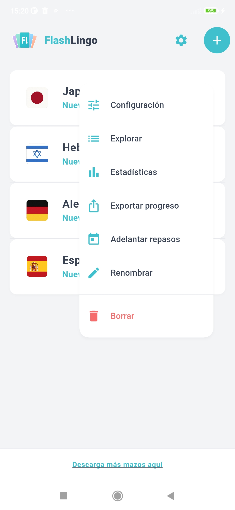
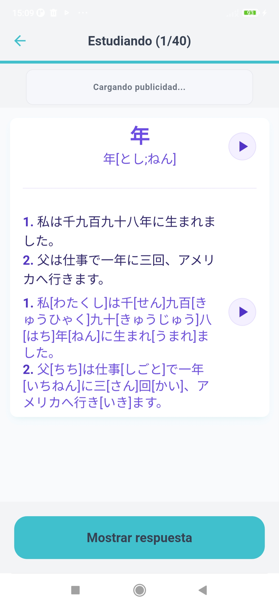
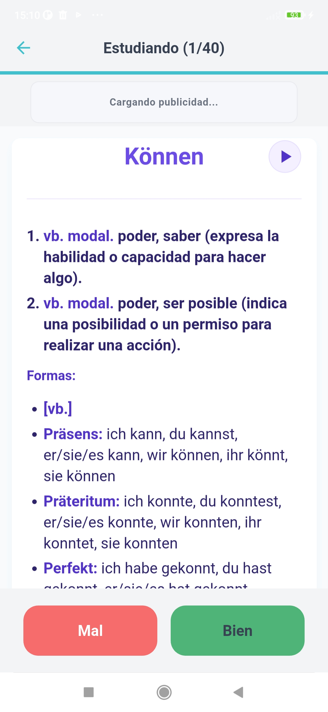
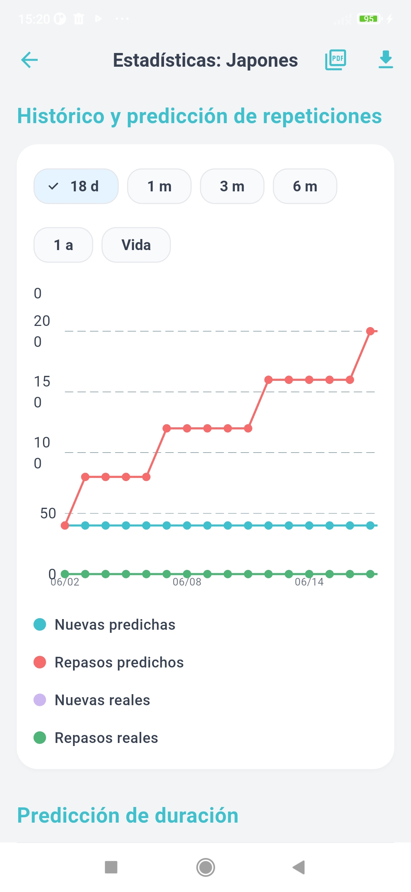
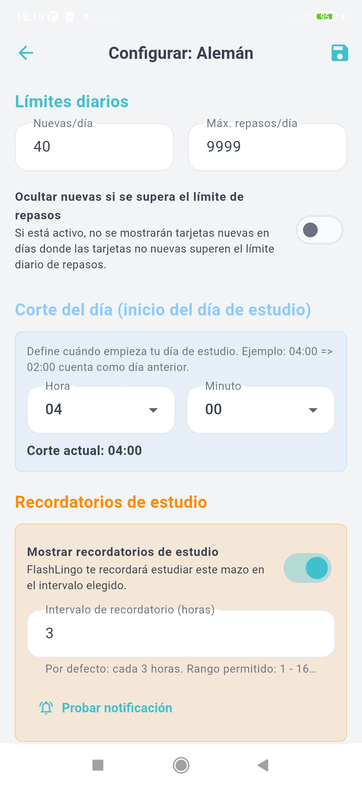

Aprendizaje local
Tus mazos, progreso, configuracion, sesiones y estadisticas se guardan localmente en tu dispositivo. No necesitas crear una cuenta para empezar a estudiar.

FlashLingo es una app de flashcards para estudiantes de idiomas que quieren aprender y adquirir vocabulario de forma rapida y eficiente, tener control sobre sus mazos, su progreso, su ritmo de estudio y sus datos de aprendizaje.
Importa mazos .flashjp, estudia tarjetas de reconocimiento y produccion, practica con audio y modo escritura, y analiza tu progreso con estadisticas detalladas, sin necesidad de crear una cuenta.
Estudio local. Sin cuenta ni necesidad de registrarse. Tu progreso se queda en tu dispositivo.
Muchas apps de idiomas utilizan metodos anticuados, no tienen un progreso rapido, te obligan a crear una cuenta, ocultan como funciona el sistema de estudio o limitan cuanto puedes estudiar o personalizar tu aprendizaje. FlashLingo propone un enfoque diferente.
Tu importas tus propios mazos, estudias localmente en tu dispositivo, ajustas cada mazo a tu ritmo y mantienes tu progreso bajo tu control.
Nuestro metodo de aprendizaje y nuestro algoritmo te permiten adquirir y aprender vocabulario rapido y de forma eficiente, bajo tu propio ritmo.
Tus mazos, progreso, configuracion, sesiones y estadisticas se guardan localmente en tu dispositivo. No necesitas crear una cuenta para empezar a estudiar.
Estudia tarjetas de reconocimiento y produccion, usa audio y frases de ejemplo, activa el modo escritura y deja que la repeticion espaciada programe tus repasos.
Revisa tu rendimiento con estadisticas, exporta reportes en CSV o PDF y crea backups manuales .flashjp del progreso de tus mazos.
Elige un mazo oficial .flashjp o restaura un backup de progreso del usuario. FlashLingo verifica el paquete, lee su manifiesto, importa la base de datos y prepara el mazo para que puedas estudiar y empezar a adquirir vocabulario.
Practica tarjetas de reconocimiento para comprender palabras y tarjetas de produccion para recordarlas activamente. Las tarjetas incluyen definiciones, ejemplos, traducciones, lecturas, audio, imagenes y formas adicionales.
FlashLingo programa tus repasos segun tu rendimiento gracias a nuestro algoritmo. Las tarjetas nuevas, en aprendizaje, en repaso y en reaprendizaje se organizan dentro de una cola diaria de estudio.
Usa las estadisticas del mazo para revisar tu precision, tiempo de estudio, tarjetas dificiles, historial de repasos y carga futura. Exporta tus datos cuando lo necesites.
Importa paquetes de FlashLingo que pueden contener una base SQLite, metadatos, audio, imagenes y configuracion recomendada del mazo.
Cada palabra puede generar dos direcciones de estudio: reconocer la palabra en el idioma objetivo y producirla a partir de su significado.
En tarjetas de produccion, el modo escritura te permite escribir tu respuesta, compararla con la palabra objetivo y desbloquear Good solo cuando alcanzas el porcentaje minimo configurado.
Cada mazo puede tener sus propios limites diarios, pasos de aprendizaje, comportamiento ante fallos, parametros del algoritmo, mezcla, recordatorios, modo escritura y deshacer.
Consulta precision, tiempo de estudio, prevision de repasos, actividad diaria, tarjetas dificiles e historial de sesiones mediante graficos y resumenes claros.
Exporta estadisticas de estudio en CSV o PDF, y crea backups manuales .flashjp del progreso de cada mazo cuando quieras conservar o mover tus datos.
Activa recordatorios opcionales por mazo. FlashLingo usa notificaciones locales para avisarte cuando hay tarjetas esperando repaso.
FlashLingo soporta interfaz en ingles, espanol, rumano, aleman, frances, japones y chino.
FlashLingo esta disenada como una app local-first. No necesitas crear una cuenta, y FlashLingo no usa un servidor propio para guardar tus mazos o tu progreso.
Tus mazos importados, archivos multimedia, historial de estudio, configuracion de mazos, sesiones y estadisticas se guardan en el almacenamiento local de la app dentro de tu dispositivo.
Leer Politica de PrivacidadLos botones quedan preparados para enlazar a las tiendas y builds oficiales cuando esten publicados.
Los mazos de FlashLingo usan el formato .flashjp. Los mazos oficiales incluyen vocabulario, frases de ejemplo, traducciones, lecturas, audio, imagenes, iconos de mazo y configuracion recomendada de estudio.
Descarga un mazo, importalo en la app y empieza a estudiar localmente.

FlashLingo esta construida alrededor de paquetes de mazos portables. Un paquete .flashjp puede contener una base de datos, un manifiesto, archivos de audio, imagenes, iconos de mazo y valores de configuracion.
Esto permite crear mazos de vocabulario mas ricos, con ejemplos, traducciones, lecturas, multimedia y configuracion personalizada de estudio.
Pero no solo eso: puedes crear mazos para cualquier tema o proposito, ya que el formato .flashjp es muy flexible.
FlashLingo combina una interfaz limpia con herramientas avanzadas para estudiar, revisar y analizar tu progreso sin perder concentracion.




.flashjp con progreso claro, diagnosticos y manejo de conflictos.No. FlashLingo no requiere una cuenta para estudiar. Tus mazos y tu progreso se guardan localmente en tu dispositivo.
No. La version actual no incluye sincronizacion en la nube. Puedes exportar manualmente el progreso de un mazo como backup .flashjp.
Un archivo .flashjp es un paquete de FlashLingo usado para importar mazos oficiales o restaurar backups de progreso del usuario.
Puedes estudiar localmente los mazos que ya importaste. Algunas funciones, como los anuncios o la apertura de enlaces externos, pueden requerir conexion a internet.
Si, pero no son invasivos y no afectan el estudio. FlashLingo puede mostrar anuncios mediante Google AdMob en builds moviles compatibles.
Si. Puedes exportar estadisticas en CSV/PDF y crear un backup manual .flashjp para cada mazo.
Importa tus mazos, estudia con repeticion espaciada, revisa tus estadisticas y manten tu progreso de aprendizaje en tu dispositivo.